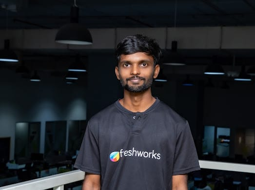

Technical Skills
- HTML, CSS
- Python & FastAPI
- SQL & Databases
- Git
Passionate about building clean, scalable software that solves real-world problems. Driven by curiosity and purpose, I transform ideas into meaningful projects and products. Beyond code, I create solutions that are innovative, sustainable, and impactful.
View My Work
frontend static using html and CSS.
View ProjectData-driven application website with optimized queries.
For Life skills project I've done business analysis on Boeing aviation company
Technology does not shape the future on its own—how we apply it does. My work explores the intersection of technology, innovation, and market behavior, with a strong focus on sustainability and long-term value creation. I analyze how emerging technologies can be used to solve real-world problems, transform industries, and create meaningful social and environmental impact. Through in-depth articles and real-world case studies, I examine how businesses can strategically leverage technology to drive innovation, adapt to evolving markets, and build resilient, future-ready growth models. At the core of my work is a simple belief: technology should not just accelerate progress—it should make progress sustainable, inclusive, and impactful.
I am driven by a passion for building clean, scalable software that solves real-world problems while creating positive impact. Guided by curiosity and purpose, I transform ideas into meaningful projects, build products, and explore case studies that make a difference. For me, technology is not just a tool—it’s a way to turn vision into impact. Beyond code, I actively contribute to social and environmental initiatives, combining innovation with responsibility. I strive to create solutions that are efficient, sustainable, and transformative—where technology drives progress that truly matters.

Open to internships and job opportunities.
Contact Me
Social activities and impact
I actively contribute to social and environmental initiatives that promote sustainability, conservation, and community well-being. I believe long-term progress is achieved when innovation and responsibility move together. From my school years, I have been involved in environmental awareness and plantation programs. Recently, I participated in wildlife support initiatives such as bird-nest preparation to help protect species affected by rapid environmental change. I have also taken part in large-scale sustainability drives, including a plantation initiative where 2,000+ trees were planted along a canal to restore ecological balance. Beyond physical participation, I contribute financially to donation drives whenever possible, ensuring consistent support for communities in need. Through these efforts, I aim to demonstrate how individual action—combined with collective responsibility—can create measurable environmental and social impact. Tree plantation drive